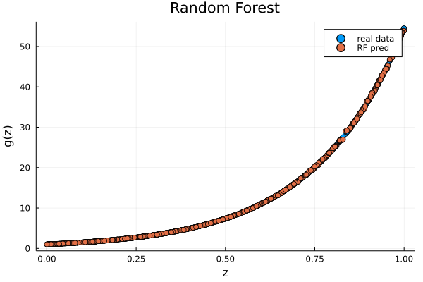

# !wget https://developer.nvidia.com/compute/cuda/9.0/Prod/local_installers/cuda-repo-ubuntu1604-9-0-local_9.0.176-1_amd64-deb
# !dpkg -i cuda-repo-ubuntu1604-9-0-local_9.0.176-1_amd64-deb
# !apt-key add /var/cuda-repo-9-0-local/7fa2af80.pub
# !apt update -q
# !apt install cuda gcc-6 g++-6 -y -q
# !ln -s /usr/bin/gcc-6 /usr/local/cuda/bin/gcc
# !ln -s /usr/bin/g++-6 /usr/local/cuda/bin/g++
# !curl -sSL "https://julialang-s3.julialang.org/bin/linux/x64/1.7/julia-1.7.3-linux-x86_64.tar.gz" -o julia.tar.gz
# !tar -xzf julia.tar.gz -C /usr --strip-components 1
# !rm -rf julia.tar.gz*
# !julia -e 'using Pkg; pkg"add IJulia; precompile"'
15. Functional Approximations by NN and RF#
Here we show how the function $\( x \mapsto exp(4 x) \)$ can be easily approximated by a tree-based methods (Trees, Random Forest) and a neural network (2 Layered Neural Network)
15.1. Functional Approximation by a Tree#
#import packages
using Pkg
Pkg.add("Distributions")
Pkg.add("DecisionTree")
Pkg.add("Plots")
using LinearAlgebra, DataFrames, Statistics, Random, Distributions,DecisionTree, Plots
Resolving package versions...
No Changes to `C:\Users\PC\.julia\environments\v1.6\Project.toml`
No Changes to `C:\Users\PC\.julia\environments\v1.6\Manifest.toml`
Resolving package versions...
No Changes to `C:\Users\PC\.julia\environments\v1.6\Project.toml`
No Changes to `C:\Users\PC\.julia\environments\v1.6\Manifest.toml`
Resolving package versions...
No Changes to `C:\Users\PC\.julia\environments\v1.6\Project.toml`
No Changes to `C:\Users\PC\.julia\environments\v1.6\Manifest.toml`
rand(1)
X_train = rand(1000,1)
f1 = x->exp(4*x)
Y_train = vec(f1.(X_train));
TreeModel = build_tree(Y_train, X_train)
# apply learned model
predTM = apply_tree(TreeModel, X_train)
scatter(X_train, Y_train, type="p", pch=19, xlab="z", ylab="g(z)",alpha=.8)
plot!(X_train, predTM, lt = :scatter )
Another method
Pkg.add("DecisionTree")
Pkg.add("ScikitLearn")
Pkg.add("PyPlot")
using DecisionTree, ScikitLearn, PyPlot
Resolving package versions...
No Changes to `C:\Users\PC\.julia\environments\v1.6\Project.toml`
No Changes to `C:\Users\PC\.julia\environments\v1.6\Manifest.toml`
Resolving package versions...
No Changes to `C:\Users\PC\.julia\environments\v1.6\Project.toml`
No Changes to `C:\Users\PC\.julia\environments\v1.6\Manifest.toml`
Resolving package versions...
No Changes to `C:\Users\PC\.julia\environments\v1.6\Project.toml`
No Changes to `C:\Users\PC\.julia\environments\v1.6\Manifest.toml`
WARNING: using PyPlot.scatter in module Main conflicts with an existing identifier.
reg= DecisionTreeRegressor(pruning_purity_threshold = 0.1)
DecisionTreeRegressor
max_depth: -1
min_samples_leaf: 5
min_samples_split: 2
min_purity_increase: 0.0
pruning_purity_threshold: 0.1
n_subfeatures: 0
root: nothing
#using DecisionTree: fit as fit
DecisionTree.fit!(reg, X_train,Y_train)
DecisionTreeRegressor
max_depth: -1
min_samples_leaf: 5
min_samples_split: 2
min_purity_increase: 0.0
pruning_purity_threshold: 0.1
n_subfeatures: 0
root: Decision Tree
Leaves: 142
Depth: 10
predic1 = DecisionTree.predict(reg,X_train);
scatter(X_train, Y_train, type="p", pch=19, xlab="z", ylab="g(z)",alpha=.8)
scatter!(X_train,predic1 )
tree = DecisionTreeRegressor(pruning_purity_threshold = 0.5) #
DecisionTree.fit!(tree, X_train,Y_train)
pred2 = DecisionTree.predict(tree,X_train)
scatter(X_train, Y_train, type="p", pch=19, xlab="z", ylab="g(z)",alpha=.8, label = "actual")
scatter!(X_train,pred2 ,label = "pred")
15.2. Functional Approximation by RF#
Here we show how the function $\( x \mapsto exp(4 x) \)$ can be easily approximated by a tree-based method (Random Forest) and a neural network (2 Layered Neural Network)
RFmodel = build_forest(Y_train, X_train)
pred_RF = apply_forest(RFmodel,X_train)
scatter(X_train, Y_train, type="p", pch=19, xlab="z", ylab="g(z)", label = "real data", title = "Random Forest")
scatter!(X_train,pred_RF, label= "RF pred")

15.3. Boosted Trees#
Pkg.add("JLBoost"),Pkg.add("StatsBase"),Pkg.add("MLJBase"),Pkg.add("MLJ")
Pkg.add(url ="https://github.com/Evovest/EvoTrees.jl")
using StatsBase: sample
using EvoTrees,MLJBase, MLJ,JLBoost,EvoTrees
Resolving package versions...
No Changes to `C:\Users\PC\.julia\environments\v1.6\Project.toml`
No Changes to `C:\Users\PC\.julia\environments\v1.6\Manifest.toml`
Resolving package versions...
No Changes to `C:\Users\PC\.julia\environments\v1.6\Project.toml`
No Changes to `C:\Users\PC\.julia\environments\v1.6\Manifest.toml`
Resolving package versions...
No Changes to `C:\Users\PC\.julia\environments\v1.6\Project.toml`
No Changes to `C:\Users\PC\.julia\environments\v1.6\Manifest.toml`
Resolving package versions...
No Changes to `C:\Users\PC\.julia\environments\v1.6\Project.toml`
No Changes to `C:\Users\PC\.julia\environments\v1.6\Manifest.toml`
Updating git-repo `https://github.com/Evovest/EvoTrees.jl`
Resolving package versions...
No Changes to `C:\Users\PC\.julia\environments\v1.6\Project.toml`
No Changes to `C:\Users\PC\.julia\environments\v1.6\Manifest.toml`
tree_model = EvoTreeRegressor(loss=:linear, max_depth=4, η=0.01, nrounds=100)
EvoTreeRegressor(
loss = EvoTrees.Linear(),
nrounds = 100,
λ = 0.0,
γ = 0.0,
η = 0.01,
max_depth = 4,
min_weight = 1.0,
rowsample = 1.0,
colsample = 1.0,
nbins = 64,
α = 0.5,
metric = :mse,
rng = MersenneTwister(123),
device = "cpu") @756
mach = machine(tree_model, X_train, Y_train)
Machine{EvoTreeRegressor{Float64,…},…} @017 trained 0 times; caches data
args:
1: Source @677 ⏎ `AbstractMatrix{ScientificTypes.Continuous}`
2: Source @195 ⏎ `AbstractVector{ScientificTypes.Continuous}`
MLJ.fit!(mach)
┌ Info: Training Machine{EvoTreeRegressor{Float64,…},…} @017.
└ @ MLJBase C:\Users\PC\.julia\packages\MLJBase\KWyqX\src\machines.jl:342
Machine{EvoTreeRegressor{Float64,…},…} @017 trained 1 time; caches data
args:
1: Source @677 ⏎ `AbstractMatrix{ScientificTypes.Continuous}`
2: Source @195 ⏎ `AbstractVector{ScientificTypes.Continuous}`
yhat = MLJ.predict(mach, X_train);
scatter(X_train, Y_train,type="p", pch=19, xlab="z", ylab="g(z)", label = "real data", title = "Boosted Tree")
scatter!(X_train, yhat, label = "boosted tree pred")
Pkg.add("XGBoost")
using XGBoost
using XGBoost: predict as predict
Resolving package versions...
No Changes to `C:\Users\PC\.julia\environments\v1.6\Project.toml`
No Changes to `C:\Users\PC\.julia\environments\v1.6\Manifest.toml`
bst = xgboost(X_train, 100, label = Y_train, eta = 0.01, max_depth = 4);
[1] train-rmse:18.876593
[2] train-rmse:18.691868
[3] train-rmse:18.508989
[4] train-rmse:18.327881
[5] train-rmse:18.148575
[6] train-rmse:17.971058
[7] train-rmse:17.795252
[8] train-rmse:17.621233
[9] train-rmse:17.448864
[10] train-rmse:17.278259
[11] train-rmse:17.109264
[12] train-rmse:16.942022
[13] train-rmse:16.776306
[14] train-rmse:16.612339
[15] train-rmse:16.449865
[16] train-rmse:16.289007
[17] train-rmse:16.129822
[18] train-rmse:15.972092
[19] train-rmse:15.815914
[20] train-rmse:15.661380
[21] train-rmse:15.508253
[22] train-rmse:15.356736
[23] train-rmse:15.206606
[24] train-rmse:15.058071
[25] train-rmse:14.910873
[26] train-rmse:14.765248
[27] train-rmse:14.620919
[28] train-rmse:14.478019
[29] train-rmse:14.336637
[30] train-rmse:14.196507
[31] train-rmse:14.057889
[32] train-rmse:13.920573
[33] train-rmse:13.784621
[34] train-rmse:13.649907
[35] train-rmse:13.516484
[36] train-rmse:13.384448
[37] train-rmse:13.253679
[38] train-rmse:13.124231
[39] train-rmse:12.996073
[40] train-rmse:12.869074
[41] train-rmse:12.743465
[42] train-rmse:12.619059
[43] train-rmse:12.495759
[44] train-rmse:12.373770
[45] train-rmse:12.252950
[46] train-rmse:12.133340
[47] train-rmse:12.014955
[48] train-rmse:11.897552
[49] train-rmse:11.781461
[50] train-rmse:11.666348
[51] train-rmse:11.552497
[52] train-rmse:11.439727
[53] train-rmse:11.328119
[54] train-rmse:11.217441
[55] train-rmse:11.108001
[56] train-rmse:10.999513
[57] train-rmse:10.892219
[58] train-rmse:10.785958
[59] train-rmse:10.680598
[60] train-rmse:10.576423
[61] train-rmse:10.473196
[62] train-rmse:10.371066
[63] train-rmse:10.269953
[64] train-rmse:10.169834
[65] train-rmse:10.070516
[66] train-rmse:9.972274
[67] train-rmse:9.875071
[68] train-rmse:9.778818
[69] train-rmse:9.683336
[70] train-rmse:9.588865
[71] train-rmse:9.495381
[72] train-rmse:9.402850
[73] train-rmse:9.311188
[74] train-rmse:9.220325
[75] train-rmse:9.130445
[76] train-rmse:9.041410
[77] train-rmse:8.953279
[78] train-rmse:8.865887
[79] train-rmse:8.779490
[80] train-rmse:8.693878
[81] train-rmse:8.609105
[82] train-rmse:8.525094
[83] train-rmse:8.441978
[84] train-rmse:8.359652
[85] train-rmse:8.278185
[86] train-rmse:8.197524
[87] train-rmse:8.117633
[88] train-rmse:8.038429
[89] train-rmse:7.960125
[90] train-rmse:7.882496
[91] train-rmse:7.805698
[92] train-rmse:7.729612
[93] train-rmse:7.654318
[94] train-rmse:7.579671
[95] train-rmse:7.505816
[96] train-rmse:7.432719
[97] train-rmse:7.360249
[98] train-rmse:7.288570
[99] train-rmse:7.217535
[100] train-rmse:7.147254
pred_xg = XGBoost.predict(bst, X_train);
scatter(X_train, Y_train,type="p", pch=19, xlab="z", ylab="g(z)", label = "real data", title = "Boosted Tree")
scatter!(X_train, pred_xg, label = "boosted tree pred")
15.4. Same Example with a Neural Network#
using Pkg
Pkg.add("Flux")
Pkg.add("CUDA")
using Flux ,CUDA
Updating registry at `C:\Users\PC\.julia\registries\General`
Updating git-repo `https://github.com/JuliaRegistries/General.git`
Resolving package versions...
No Changes to `C:\Users\PC\.julia\environments\v1.6\Project.toml`
No Changes to `C:\Users\PC\.julia\environments\v1.6\Manifest.toml`
Resolving package versions...
No Changes to `C:\Users\PC\.julia\environments\v1.6\Project.toml`
No Changes to `C:\Users\PC\.julia\environments\v1.6\Manifest.toml`
#building the model
layer1 = Dense(200, 200,relu)
layer2 = Dense(20, 20, relu )
layer3 = Dense(1,1)
model = Chain(
layer1,
layer2,
layer3)
Chain(Dense(200, 200, relu), Dense(20, 20, relu), Dense(1, 1))
#building the predict function
predict = Dense(1000, 1000)
Dense(1000, 1000)
pred1 = predict(X_train);
loss(x, y) = Flux.Losses.mse(predict(x), y)
loss(X_train, Y_train)
scatter(X_train, Y_train, label = "real data")
scatter!(X_train, pred1, label = "Pred 1 epoch")
loss(x, y) = Flux.Losses.mse(predict(x), y)
println("The MSE for this first prediction without optimizer is ", loss(X_train, Y_train))
The MSE for this first prediction without optimizer is 337.16081003955463
#we add a optimizer and join the data
opt = Descent()
data = [(X_train, Y_train)]
1-element Vector{Tuple{Matrix{Float64}, Vector{Float64}}}:
([0.9689090290325688; 0.31471100259046536; … ; 0.2663976530107113; 0.20701468772840603], [48.213357833162746, 3.521348491280118, 2.866427439356483, 8.272422817358601, 53.512866881993816, 14.529213760147783, 6.108768791529166, 19.672450641566268, 23.60526446409177, 2.954510831462392 … 4.408653805124879, 31.962469934004506, 14.977500601729055, 49.52996018680737, 3.388360418105015, 13.077868353751981, 13.46074438760623, 1.488868999465349, 2.90255276053667, 2.288871155686333])
predict.weight;
predict.bias;
parameters = Flux.params(predict)
Params([Float32[-0.013528538 0.0005054379 … 0.03477837 -0.034057308; 0.022096576 0.012891116 … 0.045323372 0.035130866; … ; 0.033888526 -0.010750242 … 0.006573618 -0.045998964; -0.023219064 0.018195882 … 0.028697826 0.008215948], Float32[0.0, 0.0, 0.0, 0.0, 0.0, 0.0, 0.0, 0.0, 0.0, 0.0 … 0.0, 0.0, 0.0, 0.0, 0.0, 0.0, 0.0, 0.0, 0.0, 0.0]])
predict.weight in parameters, predict.bias in parameters
(true, true)
#training the model
using Flux: train!
train!(loss, parameters, data, opt)
#the loss function change
println("The MSE for this second model with optimizer is ", loss(X_train, Y_train))
pred2 = predict(X_train)
scatter(X_train, Y_train, label = "real data")
scatter!(X_train, pred2, label = "pred 1 epochs")
The MSE for this second model with optimizer is 295.23456080214163
#running 100 epochs
for epoch in 1:100
train!(loss, parameters, data, opt)
end
print("The MSE with 100 epochs is ",loss(X_train, Y_train))
pred100 = predict(X_train)
scatter(X_train, Y_train, label = "real data")
scatter!(X_train, pred100, label = "pred 100 epochs")
The MSE with 100 epochs is 0.0005048678966490891